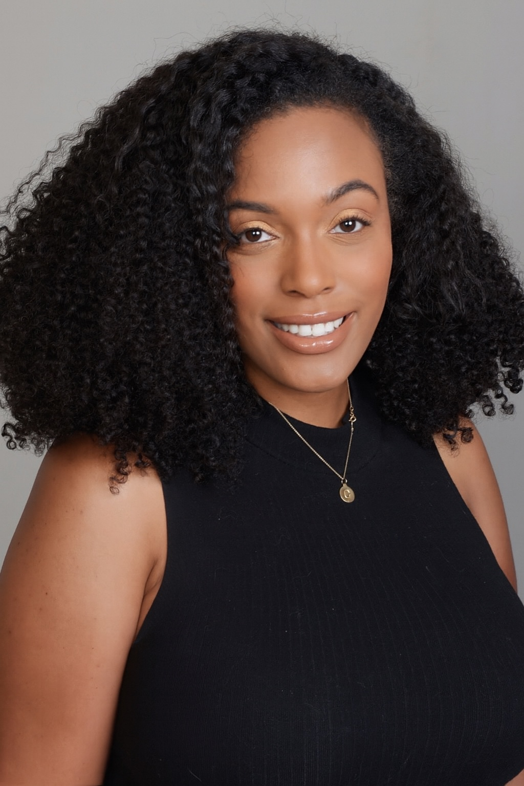
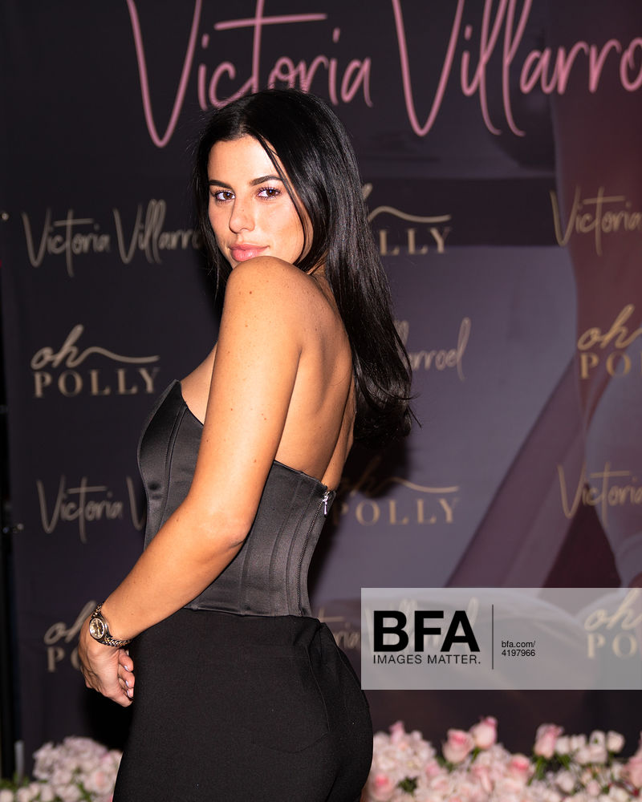
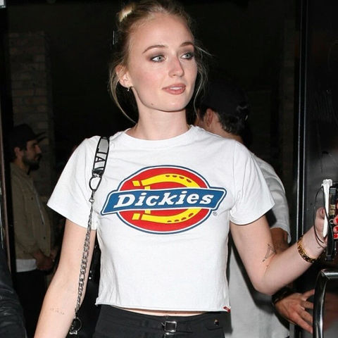
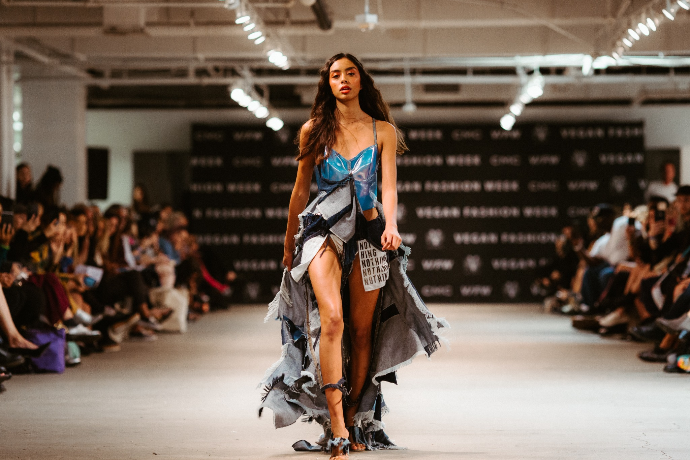

Brand Visibility & Cultural Relevance
Earned media and integrated campaigns that place consumer brands inside the right conversations.
- Consumer & lifestyle PR
- Launch strategy & media relations
- Influencer & experiential campaigns
Strategic PR & Communications Leader
I shape narratives that elevate brands, strengthen executive authority & move organizations forward, bringing 10+ years of leadership across earned media, thought leadership, reputation strategy and integrated campaigns.

Leadership portfolio
I work where narrative, reputation and visibility meet, combining strong media instincts with the judgment to advise leaders, navigate complex moments & keep communications connected to the bigger goal.
Earned media and integrated campaigns that place consumer brands inside the right conversations.
Positioning leaders and experts as credible, memorable voices in the moments that matter.
Clear, coordinated communications for complex issues, high-pressure news cycles and reputation-sensitive environments.
Selected work
From high-visibility launches to complex communications challenges, each project reflects a different way strategic PR can create relevance, authority and trust.

4.7B+ impressions for a collection launch supported by talent visibility and national consumer coverage.

8.3M+ impressions from a Holiday Skate activation, including coverage in Us Weekly and PopSugar.
50+ published placements and syndications secured for a physician and wellness expert across consumer health, lifestyle, broadcast, radio and podcast media.
Built a consistent thought leadership platform by translating clinical expertise into timely, accessible story angles and preparing the expert for opportunities across Prevention, EatingWell, Health, Men’s Journal, KABC Los Angeles and more.

95M+ impressions with coverage across Vogue, WWD, Los Angeles Times and Footwear News.
Positioned a mission-led fashion platform at the intersection of style, sustainability and culture, translating its point of view for both industry and consumer audiences.
Developed executive messaging, media strategy and rapid-response communications across globally covered legal proceedings and federal scrutiny.
Partnered with executives, legal counsel and cross-functional stakeholders to assess reputational risk, respond to intensive media interest and translate complex issues into clear narratives for external audiences.
Strengthened the talent agency’s industry visibility through consistent features in Variety, Deadline and The Hollywood Reporter.
Led proactive entertainment trade outreach, identifying timely agency and talent narratives that sustained visibility across competitive news cycles.
Earned media coverage
A broader view of the media visibility represented across Crisanta’s current coverage collection.
Explore the full coverage portfolio ↗Based on earned media reporting in the current CoverageBook portfolio. Does not include influencer, celebrity or activation performance.
Vogue · Forbes · Variety · Business Insider · The Hollywood Reporter · GQ · VICE · New York Post · mindbodygreen · Prevention · Parade · Woman’s World · ABC7 Los Angeles
Selected clients & organizations
About Crisanta
I’m a senior PR and communications leader who can find the story, see the risk and build the plan to move an organization forward.
Across agency, consulting and in-house partner environments, I have advised executives, led integrated campaigns, managed high-pressure media moments and helped brands and leaders become more visible for the right reasons. My approach is grounded in clear thinking, strong relationships and a belief that the best communications work connects reputation to real organizational goals.
When I’m not in PR mode, I’m usually photographing a sunset, getting lost in music, studying integrative medicine or being supervised by my cat, Penelope-Chanel.
Connect
Interested in discussing a communications leadership opportunity, strategic collaboration or project? The best way to reach me is on LinkedIn.